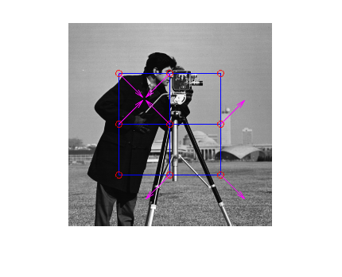
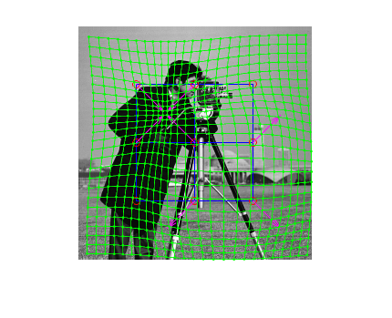
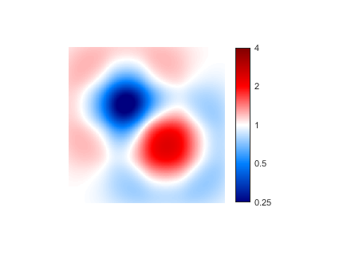

Contents
Read image and create transform
img = imread('cameraman.tif');
transfo = BSplineTransformModel2D([3 3], [64 64], [64 64]);
transfo.params = [...
+1 +1 -1 +1 0 0 ...
+1 -1 -1 -1 +1 -1 ...
0 0 -1 +1 +1 +1 ...
] * 30;
figure(1); close;
figure(1); imshow(img);
hold on; drawGrid(transfo);
drawVertexShifts(transfo, 'm');

points within the whole image
lx = 10:10:250;
ly = 10:10:250;
[x, y] = meshgrid(lx, ly);
pts = [x(:) y(:)];
pts2 = transformPoint(transfo, pts);
drawPoint(pts2, 'g.');
drawTransformedGrid(transfo, 10:10:250, 10:10:250)

Transform image
[x, y] = meshgrid(1:256, 1:256);
pts = [x(:) y(:)];
pts2 = transformPoint(transfo, pts);
img2 = reshape(imEvaluate(img, pts2), size(img));
figure;
imshow(img2, [0 255]);

Compute Map of determinant of Jacobian
jac = jacobianMatrix(transfo, pts);
jacMap = zeros(size(img));
for i = 1:length(pts)
jacMap(i) = det(jac(:,:,i));
end
logJacMap = log2(jacMap);
figure;
imshow(logJacMap, [-2 2]);
colormap (blue2White2Red);
hcb = colorbar;
ticks = get(hcb, 'Ticks');
labels = strtrim(cellstr(num2str(power(2, ticks)', '%.2g')));
set(hcb, 'TickLabels', labels)
